Yamaguchi
Yamaguchi · Yamaguchi
Yamaguchi
Highlighted on the Yamaguchi map.
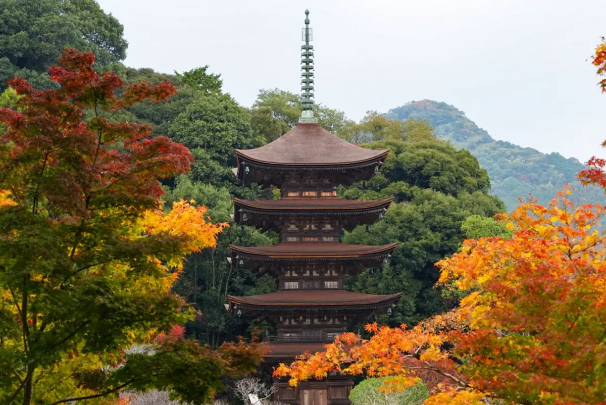
Sights
Ruri Mitsudera Goju to (Kayama Park)
Yuda Onsen
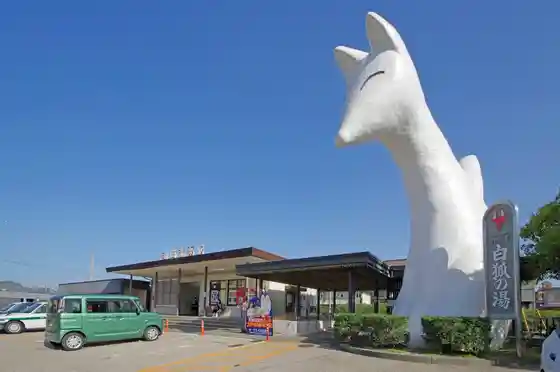
Kokuho Ruri Mitsudera Goju to Gokaicho Tokubetsu Haikan
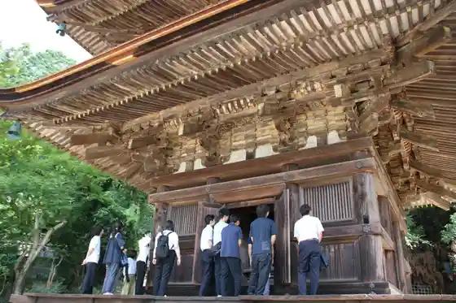
SL Yamaguchi Go
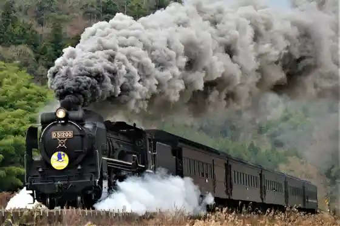
Nagato Kyo
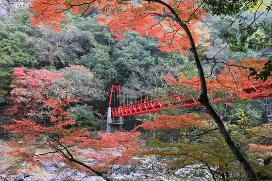
Ryufuku Tera
Kitsune no Ashi Ato
Yudaonsen Konkon Park
Ruri Mitsudera
Ato no Ringo Kari
Tsune Sakae Tera Sesshu Niwa
Roadside Station
Yamaguchi Kirara Hiroshi Memorial Park
Yamaguchi Prefectural Yamaguchi Museum
Yamaguchi Prefectural Art Museum
Fusui no Chi Yamaguchi Kaiun ! Fuku no Chi Meguri Tabi
Hora Haru Tera
Nakahara Chuya Memorial Museum
Ochi Shi Yakatato (Ochi Shi Iseki)
Kokuho Ruri Mitsudera Goju to Tokubetsu Haikan Kara Hajima Ru Jimoto Gaido to Tadoru Yamaguchi no Rekishi Sansaku
Funakata Nojo
Roadside Station Niiho no Sato
Kochi Zu Wo Katate Nimachiwo Aruko U (Yamaguchi Hen)
Ichi no Sakagawa
Sabieru Kinen Seido
Ochi Nuri Experience
Yunoki Ji Nama Onsen
Kameyama Park (Kameyama Koen Sancho Plaza)
Kochi Zu Wo Katate Nimachiwo Aruko U (Ogori Hen)
Chogen no Sato
Jisshugamine
Ishin Hyakunen Memorial Park
Shima Chi Onsen (Rohasu Shima Chi Onsen)
Nagato Kyo no Nashi Kari
Ochi O Zen Shitsu Town Jidai no Omotenashi Ryori Wo Experience
Yudaonsen Tourist Information
Takane Castle Ruins (Ochi Shi Iseki)
Yamaguchi Na Kaori Tei
Ryoashi Tera
Yamaguchi Kensei Museum (Yamaguchi Ken Kyu Kencho Sha Kyu Kenkai Gijido)
Kochi Zu Wo Katate Nimachiwo Aruko U (Sekishu Kaido Yamaguchi Hen)
Yasaka Shrine
Kyu Yamaguchi Hancho Mon
Ryuzo Tera
Shin Yamaguchi Eki Minamiguchi Tourist Information
Roadside Station Nagato Kyo Kunku no Daichi
no Mura Art Museum
Ohara Mizumi Campground
Kochi Zu Wo Katate Nimachiwo Aruko U (Suzenji Hen)
Yamaguchi Uiro Sagyoba Kengaku & Mushi Tate Shishoku
Fujio Yama Park
Ogosoka Na Nogakudo De Toki Wo Kizamu " Yamaguchi Sagi Ryu Kyogen " Experience - Noda Jinja Nogakudo -
Yamaguchi Furusato Densho Sogo Center
Jisshugamine Uddo Park
Roadside Station Ganjo Shu Onsen
Kochi Zu Wo Katate Nimachiwo Aruko U (Koe Naka Kaido Yoshiki Hen)
Ruri Mitsudera Museum
Tokusa Hachiman Shrine Shidare Sakura
Kochi Zu Wo Katate Nimachiwo Aruko U (Hagi Okan Hen (Hagi City Yamaguchi Hofu City))
KDDI Yamaguchi Eisei Tsushin Tokoro KDDI Parabora Kan
Roadside Station Aio
Hagi Okan Gaidookingu / Yamaguchi Hagi Okan Katari Bu no Kai
Yamaguchi Ken Jido Center Puranetariumu
Yamaguchi Uiro Tezukuri Experience
Inoe Park
Yamaguchi Tourist Information
Kayama Koenmae Tourist Information
Yamaguchi Kensei Museum
Nama Kumo Hachiman Shrine Shuki Rei Taisai
Nani En Tei
Niiho Ikkan no no Fuji
Kochi Zu Wo Katate Ni, Machiwo Aruko U Kikangentei Kochi Zu Uoku (Dai Village (Suzenji) Hen) (Yamaguchi)
Ju Tomo Tei Ishin Kan
Sagi no Mai (Yamaguchi Gionmatsuri)
Shin Yamaguchi Eki Kanko Koryu Center
Kichu Iori
Ima Hachiman Shrine
Yamaguchi Dai Shrine
Kido Shrine Kido Park
Tate Koji
Miyano Onsen
Washi no Ori Some Experience
Yamaguchi Kanko Boranteiagaido no Kai
Yamaguchi Ken Ryokan Hotel Seikatsu Eisei Dogyo Kumiai
Yudaonsen Ryokan Kyodokumiai
Noda Shrine
Fune Hirayama
Aio Sei Hachiman Shrine
Aio Yasohachigatokoro O Taishi Mairi
Sabieru Park
Ko no Mine
Shinko Sangyo Kirara Hama Shizenkansatsu Park
Gokoku Shrine
Suzenji Kyodo Kan
Sembo Sensa Bo Park
Tsukiyama Ato (Ochi Shi Iseki)
Nagasawa Onsen
Togagaku
Nagasawa Ike
Ajisu Onsen (Teshima Ryokan)
Ka Village Isota Seika Kikyo Iori
Unkoku Ioriato
Kyu Nakagawa Ie House (Ajisu (Igura no Kan))
Misaka Shrine
Kusayama Park
Asada Fumbo Gun
Shinpuku Tera
Ko Kuma Shrine
Kawaraya Ato
Hoppo Hachiman Shrine
Yahara River Park
Toho Hen Yama
Dai Village Masujiro Haka
Jofuku Tera
Myoken Sha no Dai Icho
Chojagahara
Kishi Ken no Ishiburo
Ishin Sakugen Chi Uoku
Dai Village Shrine
Inunaki Falls
Sawa Kawa Sekimizu
Yamaguchi Kembun Shokan
Dattai Shoshi Shokon no Hi
Inoe Kaoru no Haka
Toki Wo Koe Teyomigaeru Rekishi Emaki Shogun Taiken Tour !
Noya no Ishiburo
Chudo Beach
Ochi Shi Iseki Fu Ryoun Jiseki
Iwato Kagura
Yamaguchi Joho Geijutsu Center [YCAM]
En Ryu Tera
Dai Village Masujiro Seitan Taku Ato
Ho Mitsudera (Amida Do no Butsuzo)
Sawara Nogawa
Tsune Sakae Tera no Moriaogaeru Hanshokuchi
Yamaguchi Ken Maizo Bunkazai Center
Toho Hen Yama Haikingukosu
Ocha Ya Rin no Do Ato
Roku Ken Chaya Ato (Hagi Okan)
Aka Ne Takehito Shokei Ba no Hi
Obayashi Tera
Nagasawa no Ike
Otodoiyama Forest Park
Motonaga Tera
Sufu Masanosuke no Hi
Getsurin Tera Yakushido Fu Zushi Ichi Moto Munafuda Nimai
Ochi Hikami Burial Mound
Den Hatake no no Hanashobu Jisei Chi
Aio Reijo Yasohachigatokoro
Kinkei Falls
Hitoshi Kabe Shrine
Kushiyama Promenade
Yamaguchi Tokuji Bunka Densho Kan
Dai Village Masujiro Igaku Kinenhi
Jotoku Tera Garden
Hirosawa Tera
Sakae Yama Park
Yamaguchi Folk History Museum
Sakae Yama Shizenkansatsu Forest
Toyohisa Maru no Haka
Suo Suzenji Ato
Choju Tera
Nishiki no Mihata Seisakusho Ato
Hyaku Tani Kamato
Toyosaka Shrine
Kido Yama
Amada Sodo
Yoshio Tera Garden
Katsu Sambon Sugi
Kido Takayoshi Kyutei Ato
Tokuji Ningyo Joruri
Maru Tsuka Kofun Gun
Sawa Kawa Sekimizu / Hotaru
Hagi Okan (Yamaguchi)
Suo Meirinkan Heigaku Ryo Ato
Inoe Kaoru Sonan no Hi
Abe Kahon Jin'ato
Asakura Hachiman Shrine
Hachiman Tai Kessei no Chi
(SL Omotenashi Kupon) Kyanpen
Shiju Yase Kawazoi / Hotaru
Tokuji Machiju Boranteiagaidogurupu
Yamaguchi Ogori Bunka Museum
Shinrin Serapiigaido Tour
Narutaki
Cho Ko Tera
Juni no Kamimai
Ko no Mine Park
Katsu Kyo
Sobagagaku
Shiroishi Yama Haikingu
Kiyomizudera
Yamada Akiyoshi Kyutaku Ato
Hana O Hachiman Shrine (Garasu E Taisei Fukei Zu Nagasaki Minato Zu)
Hirosawa Saneomi no Kyutaku Ato
Kosaba Dai Kagura Mai
Sagi Ryu Kyogen
Shiroishi Yama
Nishikikoji Yorinori no Haka to Hi
Suzume Taniyama
Minami Jaku Kawa
Tokei Odori
Chi Fuku Shu Dashi Odori
Aicho Hayashi Eriaserapiirodo
Nishi Otori Hen Yama
Kannon Falls
Yamaguchi Daigaku Maizo Bunkazai Museum
Meshigagaku
Asahiyama
Chojagahara Eriaserapiirodo
to no Koshiwa Yo
Fukuda Kyo Taira no Haka
Kitsunezuka Burial Mound
Saitani Burial Mound
Nakago Iseki
Ku Ryu Mago Yama
Gen Kotae In
Sei Go Tera
Hirosawa Saneomi no Haka
Fumon Tera Juku Ato
Dai Kagura
Amagoi Odori
Tokoro Ikutaro no Haka
to to Kamato
Taira Shimizu Hachiman Shrine Honden
Nishi Toho Hen Yama Juso Haikingukosu
Fukuda Kai Kan
Kobayashi Wasaku Gahaku Hama Village Hideo (Bosutonmarason Yushosha) Tenjishitsu
Yamaguchi Yakusho
Dining
娯楽
Goraku
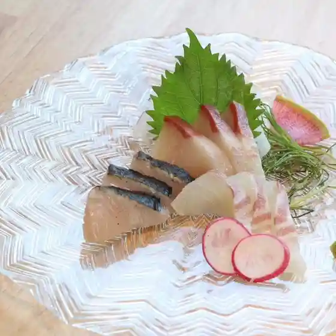
海鮮長州 湯田店
Kaisen Choushuu Yuda Mise
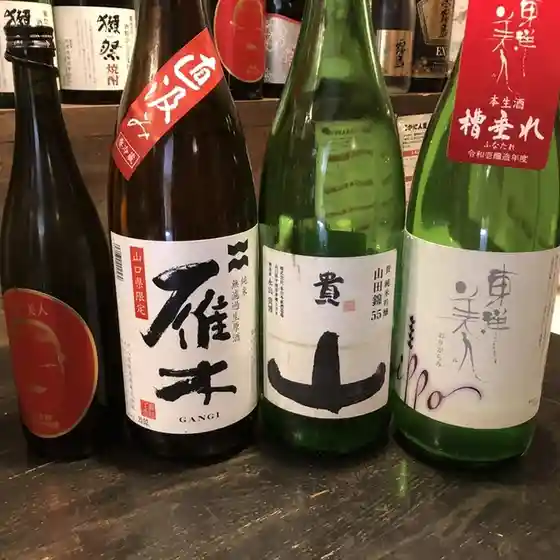
維新の食処 椿
Ishin No Shoku Tokoro Tsubaki
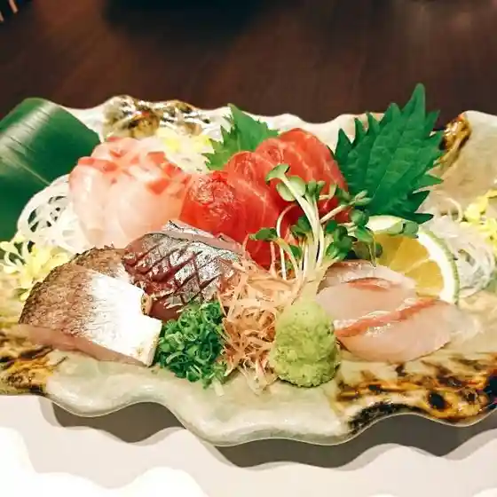
や台ずし 新山口駅北口町
Ya Dai Zushi Shinyamaguchi Eki Kitaguchi Machi

万両厚味
Manryou Atsumi
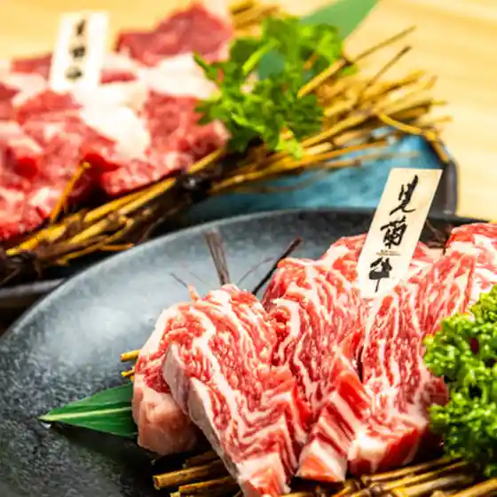
割烹 焔
Kappou Honoo
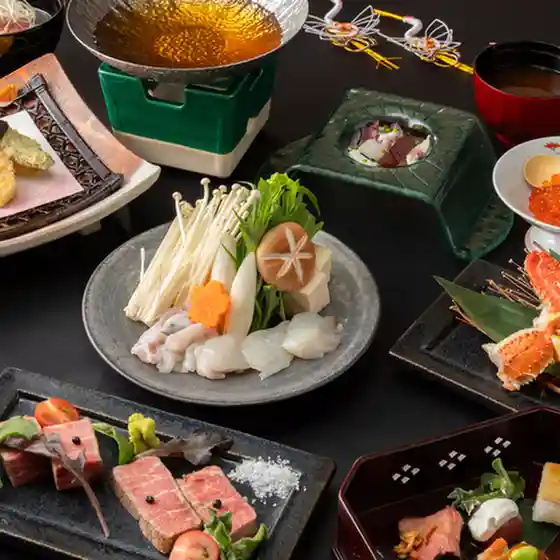
旨唐揚げと居酒メシ ミライザカ 湯田温泉店
Mune Karaage To Kyo Sake Meshi Miraizaka Yudaonsen Mise
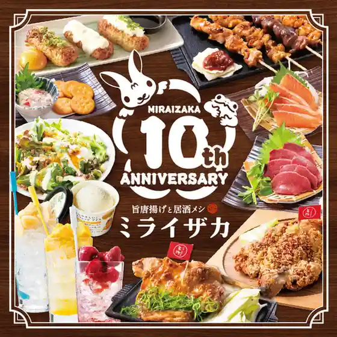
焼鳥一力 新山口店
Yakitori Ichiriki Shinyamaguchi Mise
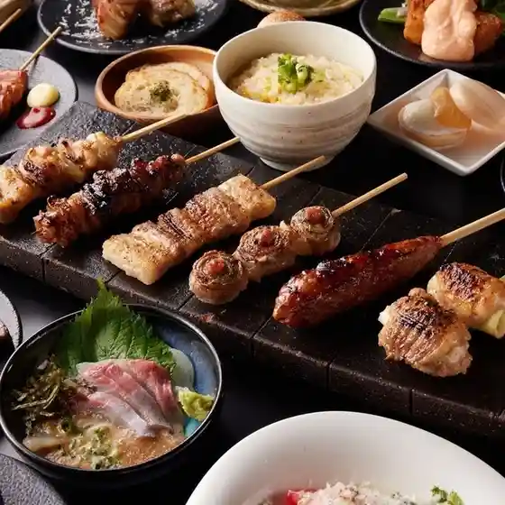
るまつ いずみや 新山口店
Rumatsu Izumiya Shinyamaguchi Mise
NICK HOUSE
Nick House
ホルモン湯田のじゃん横
Horumon Yuda Nojan Yoko
炎屋おんじ
Honoo Ya Onji
長州屋瓦 湯田店
Choushuu Okuga Yuda Mise
パスタ＆ピザハウス アキラ
Pasuta & Pizahausu Akira
長州鶏焼鳥･泳ぎ活きイカ･手作り餃子 らいが
Choushuu Niwatori Yakitori Yakitori Oyogi Iki Ika Ika Tezukuri Gyouza Raiga
タボーラ
Taboora
魚鮮水産 アイスタ新山口店
Uosen Suisan Aisuta Shinyamaguchi Mise
スゼンジハウスオープンエア
Suzenjihausuoopun'Ea
白木屋 新山口北口駅前店
Shirokiya Shinyamaguchi Kitaguchi Ekimae Mise
土火土火
Tsuchi Kado Hi
武蔵 山口店
Musashi Yamaguchi Mise
浜べゑ 新山口北口店
Hama Bee Shinyamaguchi Kitaguchi Mise
龍の棲み家
Ryuu No Sumi Ie
魚民 湯田温泉店
Uotami Yudaonsen Mise
魚民 新山口新幹線口駅前店
Uotami Shinyamaguchi Shinkansen Kuchi Ekimae Mise
オルトラーナ
Orutoraana
焼肉バル織姫
Yakiniku Baru Orihime
Espresso D Works 山口店
Espresso D Works Yamaguchi Mise
ピッツェリア ヴォルペ ビアンカ
Pittsueria Vorupe Bianka
やまぐち料理と地酒 福の花 湯田本店
Yamaguchi Ryouri To Jizake Fuku No Hana Yuda Honten
目利きの銀次 新山口新幹線口駅前店
Mekiki Kino Ginji Shinyamaguchi Shinkansen Kuchi Ekimae Mise
もぐらの里
Mogurano Sato
和食ダイニング 仁
Washoku Dainingu Hitoshi
湯田温泉三丁目 ひまり商店
Yudaonsen Sanchoume Himari Shouten
keys
Keys
新山口ホルモン おいで屋
Shinyamaguchi Horumon Oide Ya
焼肉 紅牛
Yakiniku Kurenai Ushi
炭火焼肉ホルモン横丁 新山口店
Sumibi Yakiniku Horumon Yokochou Shinyamaguchi Mise
サムギョプサル専門店 MOCCHA
Samugyopusaru Senmonten Moccha
割烹鳥屋花 寛
Kappou Toriya Hana Hiroshi
月の光
Gatsu No Hikari
ここ一軒で山口県 アンド吉祥 新山口店
Koko Ikken De Yamaguchiken Ando Kichijou Shinyamaguchi Mise
三代目網元 さかなや道場 湯田温泉店
Sandaime Amimoto Sakanaya Doujou Yudaonsen Mise
Italian Kitchen VANSAN 山口湯田店
Italian Kitchen Vansan Yamaguchi Yuda Mise
福の花 新山口店
Fuku No Hana Shinyamaguchi Mise
長州居酒屋 とも
Choushuu Izakaya Tomo
桃太郎
Momotarou
& GLOBAL TALK CAFE
&Amp; Global Talk Cafe
kitchen にこにこ気分
Kitchen Nikoniko Kibun
ナマステ 新山口駅前店
Namasute Shinyamaguchi Ekimae Mise
炭火居酒屋 D' rise
Sumibi Izakaya D' Rise
海鮮居酒屋べにや
Kaisen Izakaya Beniya
弥さか
Ya Saka
tresor
Tresor
奉楽
Hou Raku
イタリア食堂 ベケ
Itaria Shokudou Beke
薩摩ぢどり
Satsuma Jidori
本格馬肉料理 ゆい
Honkaku Baniku Ryouri Yui
磯べぇ
Iso Bee
酒ト魚 きんぎょ
Sake To Sakana Kingyo
Sakanaya no Kaitenzushi Takakura Yamaguchi Yamaguchi Prefecture Chugoku
Sakanaya no Kaitenzushi Takakura Yamaguchi Yamaguchi Prefecture Chugoku
Sakanaya no Kaitenzushi Takakura Yamaguchi Yamaguchi Prefecture Chugoku
Sakanaya no Kaitenzushi Takakura Yamaguchi Yamaguchi Prefecture Chugoku
Sakanaya no Kaitenzushi Takakura Yamaguchi Yamaguchi Prefecture Chugoku
Sakanaya no Kaitenzushi Takakura Yamaguchi Yamaguchi Prefecture Chugoku
Sakanaya no Kaitenzushi Takakura Yamaguchi Yamaguchi Prefecture Chugoku
Sakanaya no Kaitenzushi Takakura Yamaguchi Yamaguchi Prefecture Chugoku
Restaurant Nyudo Yamaguchi Yamaguchi Prefecture Chugoku
Restaurant Nyudo Yamaguchi Yamaguchi Prefecture Chugoku
Restaurant Nyudo Yamaguchi Yamaguchi Prefecture Chugoku
Restaurant Nyudo Yamaguchi Yamaguchi Prefecture Chugoku
Restaurant Nyudo Yamaguchi Yamaguchi Prefecture Chugoku
Restaurant Nyudo Yamaguchi Yamaguchi Prefecture Chugoku
Restaurant Nyudo Yamaguchi Yamaguchi Prefecture Chugoku
Restaurant Nyudo Yamaguchi Yamaguchi Prefecture Chugoku
Sumibiyaki Steak Ronoya Yamaguchi Yamaguchi Prefecture Chugoku
Sumibiyaki Steak Ronoya Yamaguchi Yamaguchi Prefecture Chugoku
Sumibiyaki Steak Ronoya Yamaguchi Yamaguchi Prefecture Chugoku
Sumibiyaki Steak Ronoya Yamaguchi Yamaguchi Prefecture Chugoku
Sumibiyaki Steak Ronoya Yamaguchi Yamaguchi Prefecture Chugoku
Sumibiyaki Steak Ronoya Yamaguchi Yamaguchi Prefecture Chugoku
Sumibiyaki Steak Ronoya Yamaguchi Yamaguchi Prefecture Chugoku
Sumibiyaki Steak Ronoya Yamaguchi Yamaguchi Prefecture Chugoku
Katsuichi Yamaguchi Yamaguchi Prefecture Chugoku
Katsuichi Yamaguchi Yamaguchi Prefecture Chugoku
Katsuichi Yamaguchi Yamaguchi Prefecture Chugoku
Katsuichi Yamaguchi Yamaguchi Prefecture Chugoku
Katsuichi Yamaguchi Yamaguchi Prefecture Chugoku
Katsuichi Yamaguchi Yamaguchi Prefecture Chugoku
Katsuichi Yamaguchi Yamaguchi Prefecture Chugoku
Katsuichi Yamaguchi Yamaguchi Prefecture Chugoku
Isokura Yamaguchi Yamaguchi Prefecture Chugoku
Isokura Yamaguchi Yamaguchi Prefecture Chugoku
Isokura Yamaguchi Yamaguchi Prefecture Chugoku
Isokura Yamaguchi Yamaguchi Prefecture Chugoku
Isokura Yamaguchi Yamaguchi Prefecture Chugoku
Isokura Yamaguchi Yamaguchi Prefecture Chugoku
Isokura Yamaguchi Yamaguchi Prefecture Chugoku
Isokura Yamaguchi Yamaguchi Prefecture Chugoku
Blue Bell Yamaguchi Yamaguchi Prefecture Chugoku
Blue Bell Yamaguchi Yamaguchi Prefecture Chugoku
Blue Bell Yamaguchi Yamaguchi Prefecture Chugoku
Blue Bell Yamaguchi Yamaguchi Prefecture Chugoku
Blue Bell Yamaguchi Yamaguchi Prefecture Chugoku
Blue Bell Yamaguchi Yamaguchi Prefecture Chugoku
Blue Bell Yamaguchi Yamaguchi Prefecture Chugoku
Blue Bell Yamaguchi Yamaguchi Prefecture Chugoku
XAVIER CAMPANA Yamaguchi Yamaguchi Prefecture Chugoku
XAVIER CAMPANA Yamaguchi Yamaguchi Prefecture Chugoku
XAVIER CAMPANA Yamaguchi Yamaguchi Prefecture Chugoku
XAVIER CAMPANA Yamaguchi Yamaguchi Prefecture Chugoku
XAVIER CAMPANA Yamaguchi Yamaguchi Prefecture Chugoku
XAVIER CAMPANA Yamaguchi Yamaguchi Prefecture Chugoku
XAVIER CAMPANA Yamaguchi Yamaguchi Prefecture Chugoku
XAVIER CAMPANA Yamaguchi Yamaguchi Prefecture Chugoku
Uomin Shin Yamaguchi Shinkansenguchi Ekimae Yamaguchi Yamaguchi Prefecture Chugok
Uomin Shin Yamaguchi Shinkansenguchi Ekimae Yamaguchi Yamaguchi Prefecture Chugok
Uomin Shin Yamaguchi Shinkansenguchi Ekimae Yamaguchi Yamaguchi Prefecture Chugok
Uomin Shin Yamaguchi Shinkansenguchi Ekimae Yamaguchi Yamaguchi Prefecture Chugok
Uomin Shin Yamaguchi Shinkansenguchi Ekimae Yamaguchi Yamaguchi Prefecture Chugok
Uomin Shin Yamaguchi Shinkansenguchi Ekimae Yamaguchi Yamaguchi Prefecture Chugok
Mekikinoginji Shinyamaguchi Shinkansen Entrance Ekimae Yamaguchi Yamaguchi Prefe
Mekikinoginji Shinyamaguchi Shinkansen Entrance Ekimae Yamaguchi Yamaguchi Prefe
Mekikinoginji Shinyamaguchi Shinkansen Entrance Ekimae Yamaguchi Yamaguchi Prefe
Mekikinoginji Shinyamaguchi Shinkansen Entrance Ekimae Yamaguchi Yamaguchi Prefe
Mekikinoginji Shinyamaguchi Shinkansen Entrance Ekimae Yamaguchi Yamaguchi Prefe
Mekikinoginji Shinyamaguchi Shinkansen Entrance Ekimae Yamaguchi Yamaguchi Prefe
Restaurant Chef Yamaguchi Yamaguchi Prefecture Chugoku
Restaurant Chef Yamaguchi Yamaguchi Prefecture Chugoku
Restaurant Chef Yamaguchi Yamaguchi Prefecture Chugoku
Restaurant Chef Yamaguchi Yamaguchi Prefecture Chugoku
Restaurant Chef Yamaguchi Yamaguchi Prefecture Chugoku
Restaurant Chef Yamaguchi Yamaguchi Prefecture Chugoku
Restaurant Chef Yamaguchi Yamaguchi Prefecture Chugoku
Restaurant Chef Yamaguchi Yamaguchi Prefecture Chugoku
Choshuya Yuda Yamaguchi Yamaguchi Prefecture Chugoku
Choshuya Yuda Yamaguchi Yamaguchi Prefecture Chugoku
Choshuya Yuda Yamaguchi Yamaguchi Prefecture Chugoku
Choshuya Yuda Yamaguchi Yamaguchi Prefecture Chugoku
Choshuya Yuda Yamaguchi Yamaguchi Prefecture Chugoku
Choshuya Yuda Yamaguchi Yamaguchi Prefecture Chugoku
Choshuya Yuda Yamaguchi Yamaguchi Prefecture Chugoku
Choshuya Yuda Yamaguchi Yamaguchi Prefecture Chugoku
Shunraiken Nakaichiten Yamaguchi Yamaguchi Prefecture Chugoku
Shunraiken Nakaichiten Yamaguchi Yamaguchi Prefecture Chugoku
Shunraiken Nakaichiten Yamaguchi Yamaguchi Prefecture Chugoku
Shunraiken Nakaichiten Yamaguchi Yamaguchi Prefecture Chugoku
Shunraiken Nakaichiten Yamaguchi Yamaguchi Prefecture Chugoku
Shunraiken Nakaichiten Yamaguchi Yamaguchi Prefecture Chugoku
Shunraiken Nakaichiten Yamaguchi Yamaguchi Prefecture Chugoku
Shunraiken Nakaichiten Yamaguchi Yamaguchi Prefecture Chugoku
Nanohana Yamaguchi Yamaguchi Prefecture Chugoku
Nanohana Yamaguchi Yamaguchi Prefecture Chugoku
Nanohana Yamaguchi Yamaguchi Prefecture Chugoku
Nanohana Yamaguchi Yamaguchi Prefecture Chugoku
Nanohana Yamaguchi Yamaguchi Prefecture Chugoku
Nanohana Yamaguchi Yamaguchi Prefecture Chugoku
Nanohana Yamaguchi Yamaguchi Prefecture Chugoku
Nanohana Yamaguchi Yamaguchi Prefecture Chugoku
Tokyoan Kozan Yamaguchi Yamaguchi Prefecture Chugoku
Tokyoan Kozan Yamaguchi Yamaguchi Prefecture Chugoku
Tokyoan Kozan Yamaguchi Yamaguchi Prefecture Chugoku
Tokyoan Kozan Yamaguchi Yamaguchi Prefecture Chugoku
Tokyoan Kozan Yamaguchi Yamaguchi Prefecture Chugoku
Tokyoan Kozan Yamaguchi Yamaguchi Prefecture Chugoku
Tokyoan Kozan Yamaguchi Yamaguchi Prefecture Chugoku
Tokyoan Kozan Yamaguchi Yamaguchi Prefecture Chugoku
Saint Remy de Provence Yamaguchi Yamaguchi Yamaguchi Prefecture Chugoku
Saint Remy de Provence Yamaguchi Yamaguchi Yamaguchi Prefecture Chugoku
Saint Remy de Provence Yamaguchi Yamaguchi Yamaguchi Prefecture Chugoku
Saint Remy de Provence Yamaguchi Yamaguchi Yamaguchi Prefecture Chugoku
Saint Remy de Provence Yamaguchi Yamaguchi Yamaguchi Prefecture Chugoku
Saint Remy de Provence Yamaguchi Yamaguchi Yamaguchi Prefecture Chugoku
Saint Remy de Provence Yamaguchi Yamaguchi Yamaguchi Prefecture Chugoku
Saint Remy de Provence Yamaguchi Yamaguchi Yamaguchi Prefecture Chugoku
Kawarasoba Yanagiya Yamaguchi Ichinosakagawa Branch Yamaguchi Yamaguchi Prefectu
Kawarasoba Yanagiya Yamaguchi Ichinosakagawa Branch Yamaguchi Yamaguchi Prefectu
Kawarasoba Yanagiya Yamaguchi Ichinosakagawa Branch Yamaguchi Yamaguchi Prefectu
Kawarasoba Yanagiya Yamaguchi Ichinosakagawa Branch Yamaguchi Yamaguchi Prefectu
Akagi Yamaguchi Yamaguchi Prefecture Chugoku
Akagi Yamaguchi Yamaguchi Prefecture Chugoku
Akagi Yamaguchi Yamaguchi Prefecture Chugoku
Akagi Yamaguchi Yamaguchi Prefecture Chugoku
Shuklevain Shinyamaguchi Station Yamaguchi Yamaguchi Prefecture Chugoku
Shuklevain Shinyamaguchi Station Yamaguchi Yamaguchi Prefecture Chugoku
Shuklevain Shinyamaguchi Station Yamaguchi Yamaguchi Prefecture Chugoku
Shuklevain Shinyamaguchi Station Yamaguchi Yamaguchi Prefecture Chugoku
Shuklevain Shinyamaguchi Station Yamaguchi Yamaguchi Prefecture Chugoku
Shuklevain Shinyamaguchi Station Yamaguchi Yamaguchi Prefecture Chugoku
Shuklevain Shinyamaguchi Station Yamaguchi Yamaguchi Prefecture Chugoku
Shuklevain Shinyamaguchi Station Yamaguchi Yamaguchi Prefecture Chugoku
Kawarasoba Yanagiya Yamaguchi Ichinosakagawa Branch Yamaguchi Yamaguchi Prefectu
Kawarasoba Yanagiya Yamaguchi Ichinosakagawa Branch Yamaguchi Yamaguchi Prefectu
Kawarasoba Yanagiya Yamaguchi Ichinosakagawa Branch Yamaguchi Yamaguchi Prefectu
Kawarasoba Yanagiya Yamaguchi Ichinosakagawa Branch Yamaguchi Yamaguchi Prefectu
Kawarasoba Yanagiya Yamaguchi Ichinosakagawa Branch Yamaguchi Yamaguchi Prefectu
Kawarasoba Yanagiya Yamaguchi Ichinosakagawa Branch Yamaguchi Yamaguchi Prefectu
Kawarasoba Yanagiya Yamaguchi Ichinosakagawa Branch Yamaguchi Yamaguchi Prefectu
Kawarasoba Yanagiya Yamaguchi Ichinosakagawa Branch Yamaguchi Yamaguchi Prefectu
Matsuda Shoeido Yamaguchi Yamaguchi Prefecture Chugoku
Matsuda Shoeido Yamaguchi Yamaguchi Prefecture Chugoku
Matsuda Shoeido Yamaguchi Yamaguchi Prefecture Chugoku
Matsuda Shoeido Yamaguchi Yamaguchi Prefecture Chugoku
Matsuda Shoeido Yamaguchi Yamaguchi Prefecture Chugoku
Matsuda Shoeido Yamaguchi Yamaguchi Prefecture Chugoku
Matsuda Shoeido Yamaguchi Yamaguchi Prefecture Chugoku
Matsuda Shoeido Yamaguchi Yamaguchi Prefecture Chugoku
Shunraiken Yamaguchi Yamaguchi Prefecture Chugoku
Shunraiken Yamaguchi Yamaguchi Prefecture Chugoku
Shunraiken Yamaguchi Yamaguchi Prefecture Chugoku
Shunraiken Yamaguchi Yamaguchi Prefecture Chugoku
Shunraiken Yamaguchi Yamaguchi Prefecture Chugoku
Shunraiken Yamaguchi Yamaguchi Prefecture Chugoku
Shunraiken Yamaguchi Yamaguchi Prefecture Chugoku
Shunraiken Yamaguchi Yamaguchi Prefecture Chugoku
Oihagitoge Yamaguchi Yamaguchi Prefecture Chugoku
Oihagitoge Yamaguchi Yamaguchi Prefecture Chugoku
Oihagitoge Yamaguchi Yamaguchi Prefecture Chugoku
Oihagitoge Yamaguchi Yamaguchi Prefecture Chugoku
Oihagitoge Yamaguchi Yamaguchi Prefecture Chugoku
Oihagitoge Yamaguchi Yamaguchi Prefecture Chugoku
Oihagitoge Yamaguchi Yamaguchi Prefecture Chugoku
Oihagitoge Yamaguchi Yamaguchi Prefecture Chugoku
Aya Yamaguchi Yamaguchi Prefecture Chugoku
Aya Yamaguchi Yamaguchi Prefecture Chugoku
Aya Yamaguchi Yamaguchi Prefecture Chugoku
Aya Yamaguchi Yamaguchi Prefecture Chugoku
Aya Yamaguchi Yamaguchi Prefecture Chugoku
Aya Yamaguchi Yamaguchi Prefecture Chugoku
Aya Yamaguchi Yamaguchi Prefecture Chugoku
Aya Yamaguchi Yamaguchi Prefecture Chugoku
Toshiro Sakura An Yamaguchi Yamaguchi Prefecture Chugoku
Toshiro Sakura An Yamaguchi Yamaguchi Prefecture Chugoku
Toshiro Sakura An Yamaguchi Yamaguchi Prefecture Chugoku
Toshiro Sakura An Yamaguchi Yamaguchi Prefecture Chugoku
Restaurant Nyudo Yamaguchi Yamaguchi Prefecture Chugoku
Restaurant Nyudo Yamaguchi Yamaguchi Prefecture Chugoku
Restaurant Nyudo Yamaguchi Yamaguchi Prefecture Chugoku
Restaurant Nyudo Yamaguchi Yamaguchi Prefecture Chugoku
Isokura Yamaguchi Yamaguchi Prefecture Chugoku
Isokura Yamaguchi Yamaguchi Prefecture Chugoku
Isokura Yamaguchi Yamaguchi Prefecture Chugoku
Isokura Yamaguchi Yamaguchi Prefecture Chugoku
Shiva Yamaguchi Yamaguchi Prefecture Chugoku
Shiva Yamaguchi Yamaguchi Prefecture Chugoku
Shiva Yamaguchi Yamaguchi Prefecture Chugoku
Shiva Yamaguchi Yamaguchi Prefecture Chugoku
Saint Remy de Provence Yamaguchi Yamaguchi Yamaguchi Prefecture Chugoku
Saint Remy de Provence Yamaguchi Yamaguchi Yamaguchi Prefecture Chugoku
Saint Remy de Provence Yamaguchi Yamaguchi Yamaguchi Prefecture Chugoku
Saint Remy de Provence Yamaguchi Yamaguchi Yamaguchi Prefecture Chugoku
Choshuya Yuda Yamaguchi Yamaguchi Prefecture Chugoku
Choshuya Yuda Yamaguchi Yamaguchi Prefecture Chugoku
Choshuya Yuda Yamaguchi Yamaguchi Prefecture Chugoku
Choshuya Yuda Yamaguchi Yamaguchi Prefecture Chugoku
Gusto Yamaguchi Yuda Yamaguchi Yamaguchi Prefecture Chugoku
Gusto Yamaguchi Yuda Yamaguchi Yamaguchi Prefecture Chugoku
Gusto Yamaguchi Yuda Yamaguchi Yamaguchi Prefecture Chugoku
Gusto Yamaguchi Yuda Yamaguchi Yamaguchi Prefecture Chugoku
Wasai Ouchiya Yamaguchi Yamaguchi Prefecture Chugoku
Wasai Ouchiya Yamaguchi Yamaguchi Prefecture Chugoku
Wasai Ouchiya Yamaguchi Yamaguchi Prefecture Chugoku
Wasai Ouchiya Yamaguchi Yamaguchi Prefecture Chugoku
Tokyoan Kozan Yamaguchi Yamaguchi Prefecture Chugoku
Tokyoan Kozan Yamaguchi Yamaguchi Prefecture Chugoku
Tokyoan Kozan Yamaguchi Yamaguchi Prefecture Chugoku
Tokyoan Kozan Yamaguchi Yamaguchi Prefecture Chugoku
Yakitori Daikichi Ogori Ekimae North Entrance Yamaguchi Yamaguchi Prefecture Chug
Yakitori Daikichi Ogori Ekimae North Entrance Yamaguchi Yamaguchi Prefecture Chug
Yakitori Daikichi Ogori Ekimae North Entrance Yamaguchi Yamaguchi Prefecture Chug
Yakitori Daikichi Ogori Ekimae North Entrance Yamaguchi Yamaguchi Prefecture Chug
Gusto Yamaguchi Yuda Yamaguchi Yamaguchi Prefecture Chugoku
Gusto Yamaguchi Yuda Yamaguchi Yamaguchi Prefecture Chugoku
Gusto Yamaguchi Yuda Yamaguchi Yamaguchi Prefecture Chugoku
Gusto Yamaguchi Yuda Yamaguchi Yamaguchi Prefecture Chugoku
Gusto Yamaguchi Yuda Yamaguchi Yamaguchi Prefecture Chugoku
Gusto Yamaguchi Yuda Yamaguchi Yamaguchi Prefecture Chugoku
Gusto Yamaguchi Yuda Yamaguchi Yamaguchi Prefecture Chugoku
Gusto Yamaguchi Yuda Yamaguchi Yamaguchi Prefecture Chugoku
Rakudokoro Furusato Yamaguchi Yamaguchi Prefecture Chugoku
Rakudokoro Furusato Yamaguchi Yamaguchi Prefecture Chugoku
Rakudokoro Furusato Yamaguchi Yamaguchi Prefecture Chugoku
Rakudokoro Furusato Yamaguchi Yamaguchi Prefecture Chugoku
Rakudokoro Furusato Yamaguchi Yamaguchi Prefecture Chugoku
Rakudokoro Furusato Yamaguchi Yamaguchi Prefecture Chugoku
Rakudokoro Furusato Yamaguchi Yamaguchi Prefecture Chugoku
Rakudokoro Furusato Yamaguchi Yamaguchi Prefecture Chugoku
Totomato Yamaguchi Yamaguchi Prefecture Chugoku
Totomato Yamaguchi Yamaguchi Prefecture Chugoku
Totomato Yamaguchi Yamaguchi Prefecture Chugoku
Totomato Yamaguchi Yamaguchi Prefecture Chugoku
Totomato Yamaguchi Yamaguchi Prefecture Chugoku
Totomato Yamaguchi Yamaguchi Prefecture Chugoku
Totomato Yamaguchi Yamaguchi Prefecture Chugoku
Totomato Yamaguchi Yamaguchi Prefecture Chugoku
Pulhyanggi Yamaguchi Yamaguchi Prefecture Chugoku
Pulhyanggi Yamaguchi Yamaguchi Prefecture Chugoku
Pulhyanggi Yamaguchi Yamaguchi Prefecture Chugoku
Pulhyanggi Yamaguchi Yamaguchi Prefecture Chugoku
Stay
国際ホテル山口
Kokusai Hoteru Yamaguchi
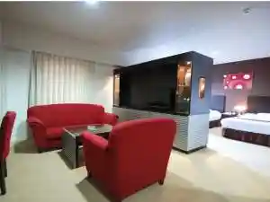
名勝 山水園
Meishou Sansui Sono
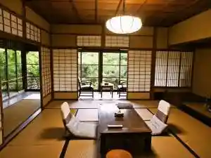
ホテルルートイン山口 湯田温泉
Hoteruruutoin Yamaguchi Yudaonsen
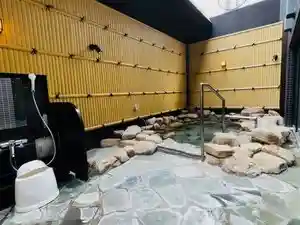
湯田温泉 防長苑
Yudaonsen Bouchou En
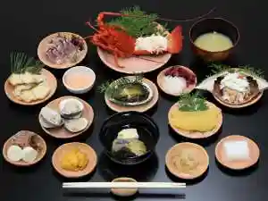
パルトピアやまぐち（防長青年館）
Parutopia Yamaguchi ( Bouchou Seinenkan )
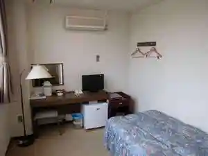
湯田温泉 ビジネスホテルうえの
Yudaonsen Bijinesuhoteru Ueno
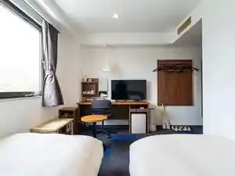
湯田温泉 セントコア山口
Yudaonsen Sentokoa Yamaguchi
ＫＫＲ山口あさくら（国家公務員共済組合連合会湯田保養所）
K K R Yamaguchi Asakura ( Kokkakoumuin Kyousai Kumiairengoukai Yuda Hoyoujo )
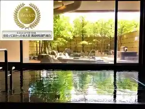
湯田温泉 ユウベルホテル松政
Yudaonsen Yuuberuhoteru Matsumasa
維新志士ゆかりの宿 松田屋ホテル
Ishin Shishi Yukarino Yado Matsuda Ya Hoteru
天然温泉 白狐の湯 スーパーホテル山口湯田温泉
Tennen Onsen Shirogitsune No Yu Suupaahoteru Yamaguchi Yudaonsen
湯の宿味の宿 梅乃屋
Yu No Yado Aji No Yado Umeno Ya
お宿Ｏｎｎ 湯田温泉
O Yado O N N Yudaonsen
湯田温泉 ホテル喜良久（きらく）
Yudaonsen Hoteru Kiyoshi Kyuu ( Kiraku )
やまぐち・湯田温泉 古稀庵
Yamaguchi ・ Yudaonsen Koki Iori
湯田温泉 西の雅 常盤
Yudaonsen Nishi No Masa Tokiwa
グリーンリッチホテル山口湯田温泉
Guriinritchihoteru Yamaguchi Yudaonsen
ホテル・アルファ－ワン山口インター
Hoteru・Arufa - Wan Yamaguchi Intaa
ホテルアムゼ新山口
Hoteruamuze Shinyamaguchi
ホテルアクティブ！山口
Hoteruakuteibu ! Yamaguchi
ロイヤルイン新山口駅前
Roiyaruin Shinyamaguchi Ekimae
コンフォートホテル新山口
Konfootohoteru Shinyamaguchi
山口グランドホテル
Yamaguchi Gurandohoteru
ホテル・アルファ－ワン小郡
Hoteru・Arufa - Wan Ogoori
ホテルアクティブプレミア新山口
Hoteruakuteibupuremia Shinyamaguchi
東横ＩＮＮ 新山口駅新幹線口
Touyoko I N N Shinyamaguchi Eki Shinkansen Kuchi